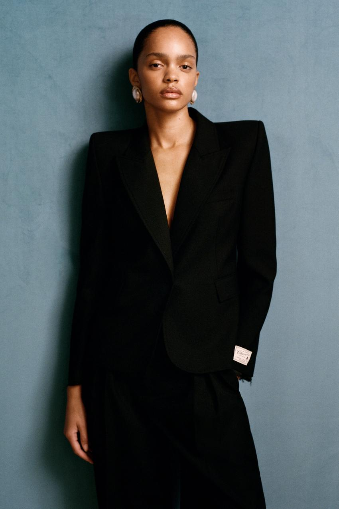
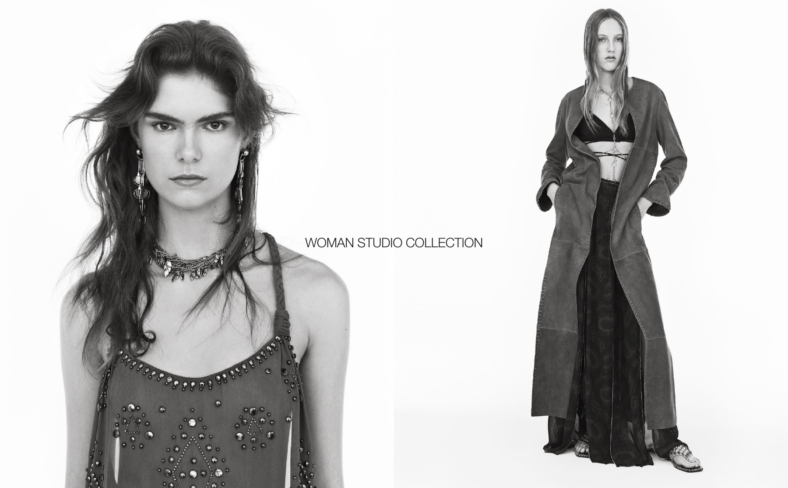

ZARA 的一些女装形象显得利落、讲究，又带着一点距离。这种气质来自服装比例、整套搭配与人物呈现的共同安排：西装、长裤和耳饰都是熟悉的东西，经过组织，却形成了比单件商品更鲜明的形象。
这篇文章关注的，是 ZARA 怎样通过这些画面，为大众成衣建立时装感。宽肩西装的商品图与 2025 年春夏 Studio 女装提供了两种不同的例子，也让我们看见人物的克制、形象的完整与具体商品之间的联系。
时装感怎样从一件西装中建立起来

图片来源：ZARA 官方商品图片。
这套造型首先让人注意到的，是肩部与腰部的反差。肩线宽而平直，腰部明显收窄，领口向下延伸。上半身展开，身体中段收束，颈部与胸前则保留一段开放空间。
西装因此显得有力量，也保留了身体曲线。即使尚未看清纽扣和口袋，也已经能够记住它的形状。熟悉的服装经过比例调整，产生了鲜明的视觉效果。
发型和配饰继续加强这个重点。向后梳起的头发露出脸部与颈部，使肩线不受遮挡；浅色耳饰在大面积黑色上方形成亮点，将视线引向面部。背景简单，没有加入太多其他信息。
这里的讲究，体现在各部分相互配合。衣服的剪裁建立形状，发型、配饰和摄影让这个形状更容易被看见。一件西装的特点，经过整套造型得到了充分发挥。
不过，ZARA 的时装感也可以通过丰富的装饰建立。2025 年春夏 Studio 女装使用了层叠首饰、装饰性细节，以及流动与结构并存的服装，风格与这套黑色西装差异明显。ZARA Studio 2025 春夏官方资料
这个对照说明，用“极简”概括 ZARA 并不充分。两种形象的共同之处，是造型有明确取向：一套集中突出肩腰比例，另一套让首饰、纹样与层次共同形成装饰感。它们都让人看见服装被组合之后的表现力。
人物为什么显得克制、有距离

图片来源：ZARA Studio 2025 春夏官方资料，第 3 页。
这张 Studio 画面中，服装与饰物的信息很丰富。左侧人物戴着长耳饰和装饰性项链，衣服上有密集细节；右侧人物穿着长外套，双手插袋，衣摆与下装延伸到脚边。两个人物的表情却较为平静。
这种组合控制了画面的情绪。衣服可以繁复，人物仍然保持克制，视线便容易停留在脸部、身体线条与服装之间。画面没有交代她们正在与谁交谈，也没有明显的招呼动作。人物清晰可见，内心却没有被说明，因而保留了一点距离。
黑色西装图也采用了相近的处理：动作幅度小，表情平静，身体稳定地占据画面。肩线、腰线和面部轮廓因此更加突出。
这里的距离感首先是图像的效果。它让人物保留一些未被解释的部分，使观看者有空间想象她与这套衣服的关系。
从容感也与画面选择有关。最终留下的瞬间里，看不到人物调整衣领、整理头发或寻找姿势的过程。观众直接面对一个已经安排妥当的状态。
因此，这类图片中的松弛往往经过细致组织。头发可以散落，手可以插袋，服装也可以宽松，但身体与画面的关系仍然清楚。人物保留自然动作，同时具有时装照片的鲜明程度。
完整形象怎样与日常成衣联系起来
一套造型包含衣服、配饰、发型、姿态和摄影，购买时却可以只选其中一件。这使品牌能够展示一个完整形象，同时给日常穿着留下不同的入口。
黑色西装图展示了这件衣服与同色下装、简洁发型、浅色耳饰搭配时的效果。即使只对西装感兴趣，也能从图中理解它可以怎样穿，哪些细节会加强它的特点。
完整造型为单件衣服提供了使用上的想象。商品自身的剪裁、颜色与细节，和画面中的人物状态联系起来，共同构成了吸引力。
ZARA 的官方介绍强调，向更广泛的人群提供趋势与灵感。这与它通过造型展示服装、再以成衣和配饰提供选择的方式相吻合。ZARA 官方品牌介绍
商品图和 Studio 宣传画面的任务也有所不同。前者在这张西装图中清楚展示了衣服的形状；后者通过更强的造型与摄影，呈现一个系列的审美取向。它们共同把具体商品与时装形象连接起来。
那件黑色西装由此不只留下了宽肩、收腰的印象。与它一起被记住的，还有人物直视镜头时克制而鲜明的形象。这正是 ZARA 这类视觉表达为成衣增加的吸引力。
留言
由 Disqus 提供。